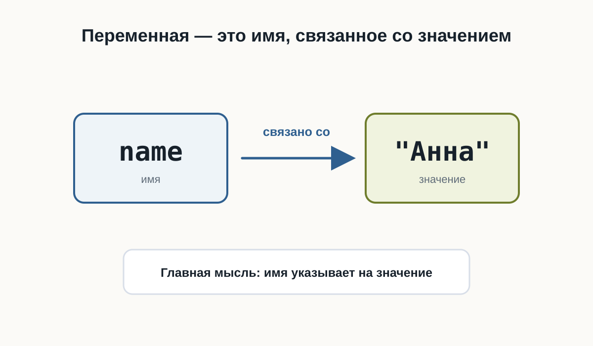
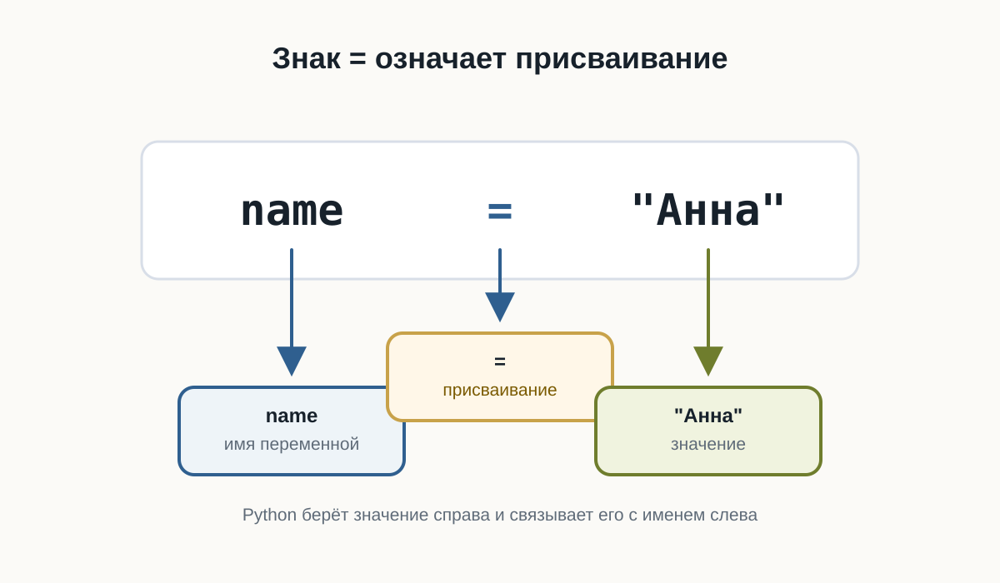
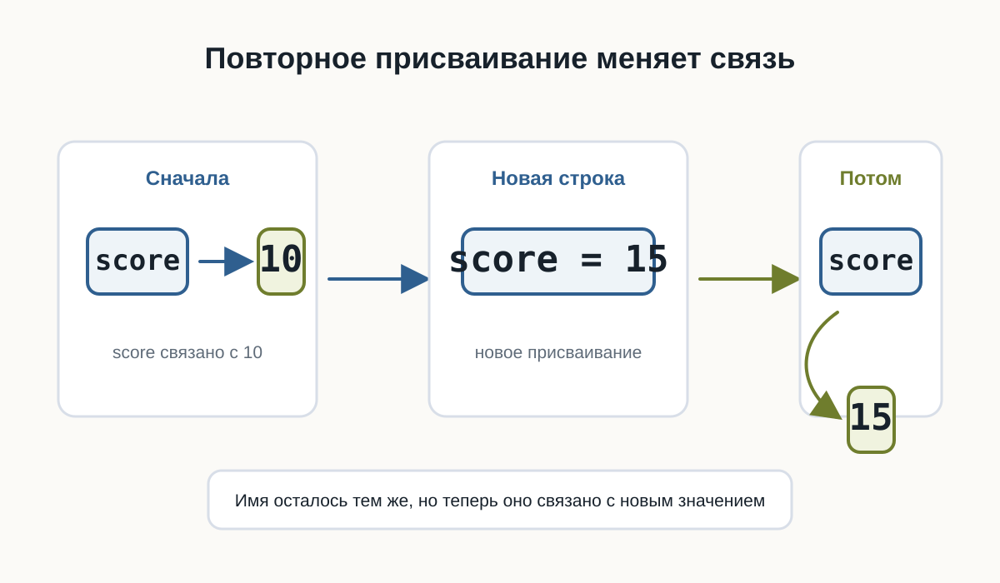

3.1 Переменные
Главный вопрос главы:
Как программа запоминает данные?
В первой программе мы уже передавали Python готовые значения:
print("Привет!")
print(25)Но настоящие программы редко работают только с данными, которые заранее написаны прямо в коде.
Программе часто нужно помнить имя пользователя, город, текущий счёт, выбранный язык или другое значение.
Для этого в Python используются переменные.
Значению можно дать имя
Представим, что в программе несколько раз используется имя пользователя:
print("Анна")
print("Привет, Анна!")
print("Анна вошла в систему")Такой код работает, но значение "Анна" повторяется несколько раз.
Если имя понадобится изменить, придётся искать и исправлять каждое место.
Вместо этого значению можно дать имя:
name = "Анна"Теперь это имя можно использовать в программе:
name = "Анна"
print(name)
print("Привет,", name)Результат:
Анна
Привет, Аннаname — это переменная.
Переменная — это имя, связанное со значением.
В нашем примере:
name -> "Анна"Когда Python встречает name, он использует значение, связанное с этим именем.

Что означает знак =
Посмотрим ещё раз:
name = "Анна"Знак = здесь не означает математическое равенство.
В Python он используется для присваивания.
Эту строку можно прочитать так:
связать имя
nameсо значением"Анна".
Слева от = находится имя переменной.
Справа от = находится значение.
Python берёт значение справа и связывает его с именем слева.
Например:
age = 25
temperature = 21.5
city = "Вена"После выполнения этих строк можно представить связи так:
age -> 25
temperature -> 21.5
city -> "Вена"
Для начала достаточно помнить простое правило:
слева от = находится имя переменной, справа — значение.
Переменную можно использовать много раз
Главная польза переменной становится заметна, когда одно значение используется в нескольких местах.
name = "Миша"
print("Привет,", name)
print("Рады тебя видеть,", name)
print("До встречи,", name)Результат:
Привет, Миша
Рады тебя видеть, Миша
До встречи, МишаЕсли теперь нужно изменить имя, достаточно исправить одну строку:
name = "Оля"Остальной код менять не придётся.
Переменные позволяют программе работать с данными через понятные имена.
Значение переменной можно изменить
Имя может быть связано с одним значением, а позже — с другим.
score = 10
print(score)
score = 15
print(score)Результат:
10
15Сначала:
score -> 10После новой строки:
score = 15связь становится другой:
score -> 15
Это называется повторным присваиванием.
Python использует текущее значение
Python выполняет программу строка за строкой и использует то значение, которое связано с именем в данный момент.
message = "Начало"
print(message)
message = "Конец"
print(message)Результат:
Начало
КонецПервый print() использует значение "Начало".
Второй print() использует уже новое значение "Конец".
Имена переменных должны быть понятными
Сравните:
x = 25и:
age = 25Обе строки работают.
Но во втором случае сразу понятнее, что означает число 25.
Поэтому лучше использовать имена, которые объясняют смысл значения:
user_name = "Анна"
product_price = 120
player_score = 50а не:
a = "Анна"
b = 120
c = 50Чем больше программа, тем важнее понятные имена.
Как можно называть переменные
Простые имена выглядят так:
name = "Анна"
age = 25
score = 100Если имя состоит из нескольких слов, обычно используют символ _:
user_name = "Анна"
player_score = 100
product_price = 49Такой стиль называется snake_case.
Для начала достаточно соблюдать несколько правил:
- использовать буквы, цифры и
_; - не начинать имя с цифры;
- не использовать пробелы;
- выбирать имя, которое объясняет смысл значения.
Например:
user_name = "Маша"работает.
А такие варианты использовать нельзя:
2name = "Маша"
user name = "Маша"Python не сможет правильно разобрать такой код.
Не пытайтесь делать имена максимально короткими.
Лучше написать:
player_score = 100чем:
ps = 100если длинное имя делает код понятнее.
Попробуйте сами
Создайте несколько переменных:
name = "Алекс"
city = "Москва"
age = 20
print(name)
print(city)
print(age)Запустите программу.
Затем:
- измените имя;
- измените город;
- измените возраст;
- запустите программу ещё раз.
Обратите внимание: команды print() менять не приходится.
Теперь добавьте ещё одну переменную:
language = "Python"и выведите её значение.
Практика: карточка разработчика
Создайте программу, которая хранит информацию о начинающем Python-разработчике.
Измените значения и запустите программу ещё раз.
Практика: изменение счёта
Создайте переменную score, несколько раз присвойте ей новое значение и после каждого изменения выводите результат.
Каждое новое присваивание связывает имя score с новым значением.
Что важно запомнить
- переменная — это имя, связанное со значением;
=используется для присваивания;- слева от
=находится имя переменной; - справа находится значение;
- значение, связанное с именем, можно изменить;
- Python выполняет код сверху вниз;
- понятные имена делают программу легче для чтения;
- имена из нескольких слов обычно записывают в стиле
snake_case.
Главная идея главы:
имя -> значениеНапример:
name -> "Анна"
score -> 100
age -> 25Что дальше?
Теперь мы умеем давать данным имена.
Но наши переменные уже содержали разные значения:
name = "Анна"
age = 25
temperature = 21.5"Анна", 25 и 21.5 выглядят по-разному — и Python работает с ними по-разному.
В следующей главе разберёмся:
Какие данные может хранить программа?